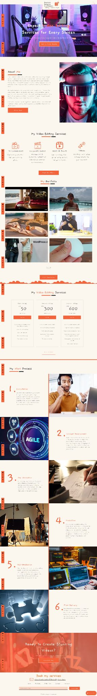

The challenge

← Back to Work
Creator · Specialist website
DaVinci Resolve Craftsman
Specialists often have plenty to show. The harder job is turning that expertise and all those resources into a path a new visitor can actually follow.
Platform usedPlatform not recorded
Project typeCreator · Specialist website
The story behind the build
A specialist can have a lot to show and still make discovery difficult.
DaVinci Resolve Craftsman had specialist expertise and useful resources, but expertise only helps a first-time visitor when the website gives it structure.
I organised the experience around the specialty first, then grouped supporting resources by what someone was trying to learn or achieve. That stopped the site from feeling like an archive of disconnected material.
The result makes the specialist positioning easier to recognise and gives visitors a more deliberate route through the available knowledge.
What I changed
- Make the DaVinci Resolve specialty obvious immediately.
- Group resources by what the visitor is trying to learn or achieve.
- Connect educational content to a next action.
- Keep the creator's expertise visible while browsing deeper resources.
Where it ended